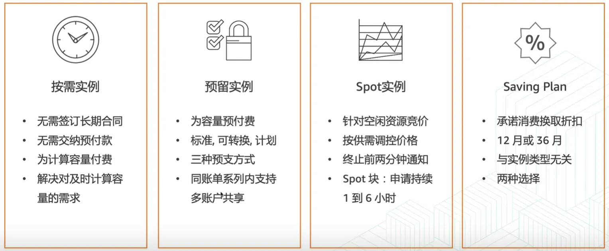
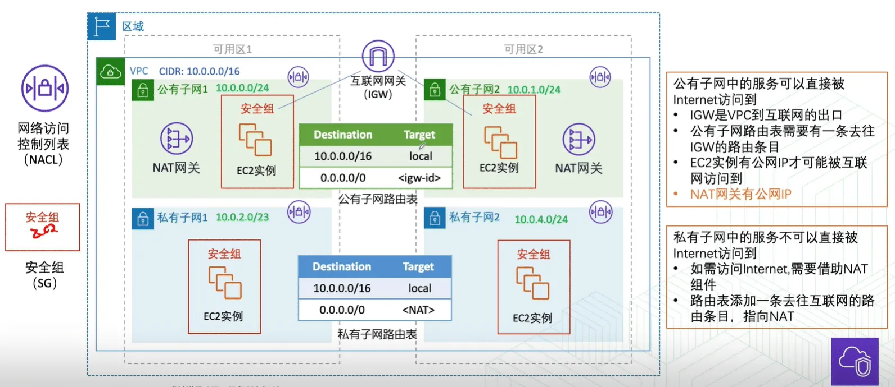
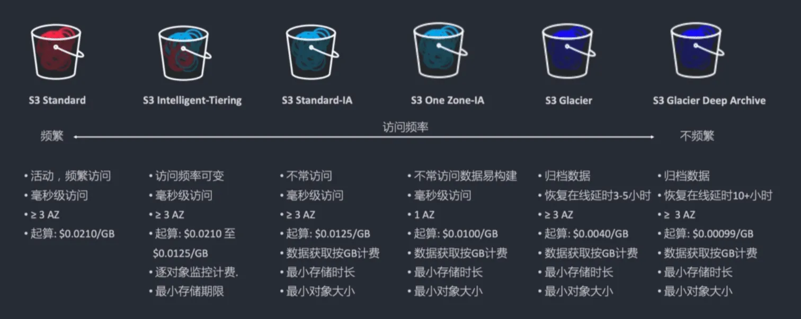
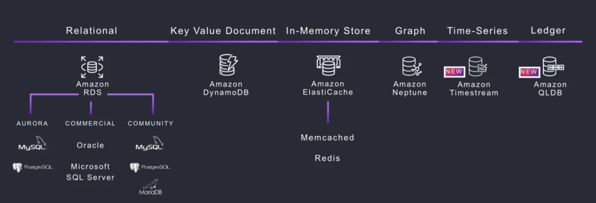
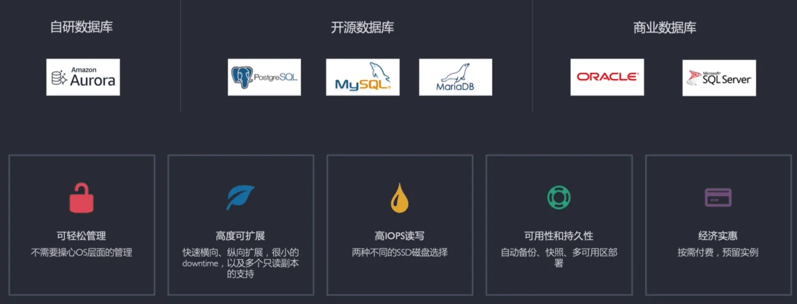

Linux: AWS使用
- TAGS: Linux
aws 基础入门
发展史
1994 母公司 amazon.com 成立
Jeff Bezos 创办了亚马逊，开始销售在线书箱，后来业务扩展到了在线音视频
2003 AWS和云计算的概念被提出来
Benjamin Black和Chris Pinkham共同发布了一篇文章，提出 想对亚马逊的基础架构进行解耦和抽象化来更好的提供服务。 甚至可以将这项服务卖给其他公司
2004 AWS Blog发布
AWS首席布道师Jeff Barr发布了一篇AWS博文
2006 AWS(Amazon Web Services)正式发布
SQS, EC2和S3服务在这个时间点发布
2008 海外竟争对手进入市场
谷歌、微软。 发布了EBS, CloudFront等服务
2013 发布了AWS认证
AWS进入中国，北京
- 2017 发布了宁夏区域
2019 发布了新会议
自动化、机器人、外太空
区域(Region)
- 地理位置
至少由两个可用区(AZ)组成- 跨区域启用和控制
数据复制 - 区域之间使用
亚马逊科技主干网络通信
可用区(Availability Zone)
- 由
一个或多个数据中心组成 - 专为
故障隔离而设计 跨可用区部署，提升弹性和可用性- 使用
高速专用链接与其他可用区互连
计算服务
ec2
- 控制台创建：选择区域、选择AMI、选择实例类型、配置实例(网络、存储、脚本等)、审核启动(密钥对)
AMI是包含软件配置(如操作系统、应用程序和应用程序服务器)的模板
可基于以下特征选择要使用的AMI
- 区域
- 支持架构：X86 or ARM
- 架构：32位 or 64位
- 虚拟化类型：HVM or PV 即硬件虚拟化或者半虚拟化
- 操作系统
- 启动许可：用于映像文件的管理和分配
- 根设备存储类型：实例存储 or EBS
- 实例类型： 建议尽量选新一代的，性能和性价比都会有提升
使用用户数据：启动ec2实例时执行的脚本
默认情况下，用户数据脚本对每个实例执行一次
- Linux 脚本–由 cloud-init 执行
- Window 批处理脚本 或者 PowerShell脚本 – 由EC2Config服务执行
- EC2定价模型
- 预留实例：按实例类型预留。 不灵活
- Saving Plan:
- 按计算： 提高折扣34折 66%
- 按实例： 提高折扣28折 72%
Spot 实例
最低可以到按需实例的1折

资源标签(方便管理)
Name: Demo-ec2 Env: Demo Department: T&C Project: Hands-on
网络服务
- vpc
- route53
- cloudfront 内容分发网络
- VPN
- DirectConnect(DX) 专线
- API Gateway
- Global Accelerator 全球统一路由。用同一个ip地址把流量导入不同地域地址
- AWS PrivateLink 用内部网络访问公有资源。如访问s3
VPC
- 允许完全控制网络配置，包括
- internet协议(IP)地址范围
- 子网创建
- 路由表创建
- 网络网关
- 安全配置
VPC功能
- 基于区域和可用区的高可用性构建
- 每个Amazon VPC都位于一个区域内
- 每个账户可以创建多个VPC
- 子网
- 用过划分VPC内的空间
- 每个子网位于一个可用区内
- 公有子网，关联互联网网关
- 私有子网，关联NAT网关

安全组与NACL
- 安全组
- 实例级别防护
- 与实例操作系统无关
- 有状态
- 只有“允许”规则
- NACL
- 子网级别防护
- 无状态
- 规则具有优先级
- “允许”和“拒绝”规则
存储服务
- EBS(Amazon Elastic Block Store) 特点：实例的硬盘
- S3(Amazon Simple Storage Service) 特点：1写多读
- EFS(Amazon Elastic File System) 特点：文件共享。多实例同一时间频繁读和写
- ……
s3 旨在进行无缝扩展和提供 99.999999999%的持久性
- 存储任意数量的对象，存储空间无限
- 单个对象的大小不超过5TB，对文件类型没有限制
- 数据以冗余方式存储。持久性 D: 11个9。 可用性4个9 99.99%
- 存储桶名称在 Amazon S3的所有现有存储桶名称中必须具有唯一性
- 通过互联网直接访问
- 对象上传或删除可以触发通知、工作流程，甚至触发脚本
- 传输及静态数据加密
- 多种存储类适应企业不同存储需求
特点：1写多读
访问权限：权限策略

S3常用使用案例
- 存储应用程序数据
- 静态网站托管。比使用ec2便宜很多
- 备份和灾难恢复(DR)
- 用于大数据的临时区域
- …..
数据库服务
- RDS
- Amazon DynameDB 非关系型数据库
- Amazon ElastiCache 内存级别缓存
- Amazon Neptune 图形数据库
- Amazon Timestream 时间序列
- Amazon QLDB 分类账数据库
选择合适的数据库类型
根据工作负载选择技术，而不是反之
从一系列关系数据库引擎、NoSQL解决方案、数据仓库选项和搜索优化的数据存储中进行选择
数据库解决方案注意事项
读写需求
吞吐量、读写能力。来水平扩展还是垂直扩展
总存储要求
存储会达到什么级别，PB、TB？ 存储的数据类型。字符数据、 文档集合、数据集之间有无强关联性？有没有严格的格式，有没有复杂的查询
- 典型的对象大小以及这些对象的访问权限性质
支持的最大并发是多少？ 对于事务性的要不要求基于ACID的支持
持久性要求
数据的丢失几率，可用性每年可能停机的时间。恢复到正常要花多少时间，达到什么合规级别
- 延迟要求
- 支持的最大并发用户数
- 查询的性质
- 完整性控制所需的强度
SQL数据库与NoSQL数据库
| 关系/SQL | NoSQL | |
| 数据存储 | 行和列 | 键值、文档和图表 |
| 架构 | 固定 | 动态 |
| 查询 | 使用SQL | 主要面向文档的集合 |
| 可扩展性 | 垂直 | 水平 |
Amazon Aurora vs. Amazon RDS
| 功能 | Amazon Aurora | Amazon RDS |
| 副本数 | 最多15个 | 最多5个 |
| 复制类型 | 异步(毫秒级) | 异步(秒级) |
| 复制对性能影响 | 影响存储层 | 影响主库 |
| 故障转移目标 | 读副本(无数据丢失) | 从库(可能有分钟级别的数据丢失) |
| 存储 | 最多64TB，自动扩展 | 最多64TB，需指定存储上限 |


IAM
json
Effect = allow|deny Action = <服务名>:<API>s3:getobject Resoure= ar:awslaws-cn:服务名:region(cn-orth-1):12位:资源名称 [Condition] = 时间|IP
服务安装
lrzsz命令
Amazon linux 2023下编译安装. 在上传文件时会用到rz命令
yum install gcc -y
wget http://ohse.de/uwe/releases/lrzsz-0.12.20.tar.gz
tar -xzvf lrzsz-0.12.20.tar.gz
cd lrzsz-0.12.20
./configure --prefix=/usr/local/lrzsz
make && make install
ln -svf /usr/local/lrzsz/bin/lrz /usr/bin/rz
ln -svf /usr/local/lrzsz/bin/lsz /usr/bin/sz
AWS EKS
VPC网络：
- 3个公有子网：
- 3个私有子网
- 3个数据库子网
路由
- 公有子网路由：0.0.0.0/0 igw，并关联公有子网
- nat 网络： 选一个公有子网当 nat 出口
- 私有子网：0.0.0.0/0 nat网关，并关联私有子网
官方文档： https://docs.aws.amazon.com/zh_cn/eks/latest/userguide/create-cluster.html
先决条件
如果要将负载均衡器部署到子网，则子网必须具有以下标签：
- 私有子网 kubernetes.io/role/internal-elb: 1
- 公有子网 kubernetes.io/role/elb: 1
下载工具
https://docs.aws.amazon.com/zh_cn/eks/latest/userguide/install-kubectl.html
AWS配置
~]# aws configure AWS Access Key ID [None]: AWS Secret Access Key [None]: Default region name [None]: ap-south-1 Default output format [None]: json
安全组：提前创建好vpc子网之间通信的安全组
创建EKS集群
IAM高权限账号
创建 IAM ROLE:
- 集群角色: eksClusterRole 附加策略如下
- AmazonEKSClusterPolicy
- 用户角色：用于 aws工具调用，使用任意有创建权限的用户或者ec2角色授权
- 方案1ec2角色授权：创建角色 role-admin
- 附加管理员权限 AdministratorAccess
- 选择机器，安全–>修改IAM角色。
- 方案2用户: 高权限用户创建AK信息。
- 方案1ec2角色授权：创建角色 role-admin
cat <<\EOF> cluster.yaml
apiVersion: eksctl.io/v1alpha5
kind: ClusterConfig
metadata:
name: prod-esk
region: af-south-1
version: "1.30"
iam:
withOIDC: true
serviceRoleARN: "arn:aws:iam::<ACCOUNT_ID>:role/eksClusterRole"
kubernetesNetworkConfig:
serviceIPv4CIDR: "172.30.0.0/16"
vpc:
id: vpc-08f2f9754398ee943
# cidr: "172.30.0.0/16"
securityGroup: sg-0ab7cbb82b63d437d
subnets:
private:
# ap-south-1a:
# id: "subnet-0212bc31c18162cee"
# cidr: "172.42.224.0/21"
af-south-1a:
id: "subnet-0a50039e33a41b566"
af-south-1b:
id: "subnet-06d2e2a18bbbb649b"
af-south-1c:
id: "subnet-0f1d0ca8d52547d99"
clusterEndpoints:
publicAccess: false
privateAccess: true
addons:
- name: vpc-cni
- name: kube-proxy
- name: coredns
#https://eksctl.io/usage/cloudwatch-cluster-logging/
cloudWatch:
clusterLogging:
enableTypes: ["audit", "authenticator"]
logRetentionInDays: 7
EOF
1.创建eks集群
eksctl create cluster -f cluster.yaml #create k8s cluster aws eks update-kubeconfig --region af-south-1 --name prod-eks # Update localhost K8S config
创建用户访问权限
- 访问–>IAM访问条目 –> 创建访问条目
- IAM主体ARN选择用户
- 类型：标准
- 策略名称：AmazonEKSClusterAdminPolicy
默认是私有API访问，开启公私有访问
- 选择集群–>联网–>管理–>端点访问
- 公有和私有，CICR: 0.0.0.0/0 允许所有人访问公网API。 也可指定内网段加公网IP
创建Nodegroup
参考：
- 自定义安全组规则：EKS 安全组要求
- Amazon EC2 用户数据
创建 IAM ROLE:
- 节点角色: AmazonEKSNodeRole 附加策略如下
- AmazonEC2ContainerRegistryReadOnly
- AmazonEKSWorkerNodePolicy
- AmazonEKS_CNI_Policy (IPv4)
- 以下为安装其他功能时所需权限
- ElasticLoadBalancingFullAccess (创建负载均衡时用到)
[root@proxy eks]# cat dev-cluster.yaml apiVersion: eksctl.io/v1alpha5 kind: ClusterConfig metadata: name: test region: us-west-2 vpc: id: "vpc-0ba4d20e8675ae2e5" securityGroup: sg-0d7520af6a0567005 subnets: private: us-west-2a: id: "subnet-01c8dc8d1bf35c825" us-west-2d: id: "subnet-0670caa9affcd9c58" us-west-2b: id: "subnet-009f400c60ff6b2d6" us-west-2c: id: "subnet-0b5ef0f483c53dac5" managedNodeGroups: - name: ng-1-workers labels: { role: workers } instanceType: m5.xlarge desiredCapacity: 0 volumeSize: 80 privateNetworking: true
上述从会自动创建启动模板，名称规则：eksctl-<clusterName>-nodegroup-<nodeGroupName>
自定义节点组配置创建节点组
managedNodeGroups:
- name: managed-ng-2
instanceType: m5.large
desiredCapacity: 0
minSize: 0
maxSize: 1
iam:
instanceRoleARN: "arn:aws:iam::<ACCOUNT_ID>:role/AmazonEKSNodeRole"
maxPodsPerNode: 110
securityGroups:
attachIDs: ["sg-1234"]
subnets:
- subnet-id1
- subnet-id2
ssh: # use existing EC2 key
allow: true
publicKeyName: ec2_dev_key
labels:
role: worker
tags:
nodegroup-role: worker
Name: managed-ng
Environment: Production
Usage: EKS
Application: Platform
privateNetworking: true
#launchTemplate:
# id: lt-12345
# version: "2"
基于启动模板创建node节点组
cat <<\EOF> eks-nodegroup.yaml
apiVersion: eksctl.io/v1alpha5
kind: ClusterConfig
metadata:
name: prod-esk
region: af-south-1
version: "1.30"
managedNodeGroups:
- name: managed-ng-3
#instanceType: m5.large
minSize: 0
desiredCapacity: 0
maxSize: 2
launchTemplate:
id: lt-011b9730dcdce74b3
version: "14"
iam:
instanceRoleARN: "arn:aws:iam::<ACCOUNT_ID>:role/AmazonEKSNodeRole"
#maxPodsPerNode: 110
#securityGroups:
# attachIDs: ["sg-04d4420337bd989f1"]
subnets:
- subnet-01c8dc8d1bf35c825
- subnet-0670caa9affcd9c58
#ssh: # use existing EC2 key
# allow: true
# publicKeyName: OPS
labels:
role: worker
tags:
nodegroup-role: worker
Name: managed-ng
Environment: Production
Usage: EKS
Application: Platform
privateNetworking: true
EOF
eksctl upgrade nodegroup --name=managed-ng-1 --cluster=managed-cluster --launch-template-version=3 --dry-run eksctl create nodegroup --config-file=<path> --include='ng-prod-*-??' --exclude='ng-test-1-ml-a,ng-test-2-?'
eks启动模板包含：密钥、磁盘、资源标签
eskctl启动模板 https://docs.aws.amazon.com/zh_cn/eks/latest/userguide/launch-templates.html
- 指定实例类型
- 指定安全组
- 指定IAM实例配置文件 #不通过eksctl不需要配置
- 密钥
- 磁盘大小
- /dev/xvda gp3 50GiB
- 资源标签
- Name, Usage, Application, Environment (实例、卷、网络接口)
- 用户数据
默认情况下，用户数据脚本和 cloud-init 指令仅在首次启动实例时在引导周期内运行。
- cloud-init MIME 语法 https://cloudinit.readthedocs.io/en/latest/explanation/format.html#mime-multi-part-archive
Amazon Linux 2 用户数据
MIME-Version: 1.0 Content-Type: multipart/mixed; boundary="//" --// Content-Type: text/x-shellscript; charset="us-ascii" #!/bin/bash set -ex echo 'ok' >/tmp/my-out.log --//--
Amazon Linux 2023 用户数据
- 其中 apiServerEndpoint、certificateAuthority 和服务 cidr 是必需的
MIME-Version: 1.0 Content-Type: multipart/mixed; boundary="BOUNDARY" --BOUNDARY Content-Type: text/x-shellscript; charset="us-ascii" #!/bin/bash set -ex echo 'ok' >/tmp/my-out.log --BOUNDARY Content-Type: application/node.eks.aws apiVersion: node.eks.aws/v1alpha1 kind: NodeConfig spec: cluster: name: my-cluster apiServerEndpoint: https://example.com certificateAuthority: Y2VydGlmaWNhdGVBdXRob3JpdHk= cidr: 10.100.0.0/16 --BOUNDARY--
使用下面命令替换上面对应值
#certificate-authority aws eks describe-cluster --query "cluster.certificateAuthority.data" --output text --name my-cluster --region region-code #api-server-endpoint aws eks describe-cluster --query "cluster.endpoint" --output text --name my-cluster --region region-code #service-cidr aws eks describe-cluster --query "cluster.kubernetesNetworkConfig.serviceIpv4Cidr" --output text --name my-cluster --region region-code
eskctl 使用自定义启动模板限制说明： https://eksctl.io/usage/launch-template-support/#notes-on-custom-ami-and-launch-template-support
增加可用ip地址：https://docs.aws.amazon.com/zh_cn/eks/latest/userguide/cni-increase-ip-addresses.html
/etc/eks/bootstrap.sh my-cluster \ --use-max-pods false \ --kubelet-extra-args '--max-pods=110'
删除eskctl创建资源： 在cloudform中找到对应名称删除所有关联资源。
如用户数据
MIME-Version: 1.0 Content-Type: multipart/mixed; boundary="BOUNDARY" --BOUNDARY Content-Type: text/x-shellscript; charset="us-ascii" #!/bin/bash set -ex echo 'ok' >/tmp/my-out.log --BOUNDARY Content-Type: application/node.eks.aws apiVersion: node.eks.aws/v1alpha1 kind: NodeConfig spec: cluster: apiServerEndpoint: https://62xxx.ap-southeast-1.eks.amazonaws.com certificateAuthority: LSxxx cidr: 10.210.0.0/16 name: eks-v1 kubelet: config: maxPods: 100 --BOUNDARY--
组件及其他
存储EBS CSI
https://docs.aws.amazon.com/zh_cn/eks/latest/userguide/ebs-csi.html
- 创建iam角色
#角色名 role_name=AmazonEKS_EBS_CSI_DriverRole-ap-south-1-prod #EKS集群名 c_n=prod-eks eksctl create iamserviceaccount \ --name ebs-csi-controller-sa \ --namespace kube-system \ --cluster ${c_n} \ --role-name ${role_name} \ --role-only \ --attach-policy-arn arn:aws:iam::aws:policy/service-role/AmazonEBSCSIDriverPolicy \ --approve
验证：检查角色的信任关系是否为该集群
添加eks组件ebs csi
页面添加ebs csi插件，绑定这个角色
- gp3
mkdir gp3
cd gp3
cat <<\EOF> gp3.yaml
kind: StorageClass
apiVersion: storage.k8s.io/v1
metadata:
name: gp3
annotations:
storageclass.kubernetes.io/is-default-class: "true"
allowVolumeExpansion: true
provisioner: ebs.csi.aws.com
volumeBindingMode: WaitForFirstConsumer
parameters:
type: gp3
EOF
设置默认存储块
# https://kubernetes.io/docs/tasks/administer-cluster/change-default-storage-class/ kubectl apply -f gp3.yaml kubectl patch storageclass gp2 -p '{"metadata": {"annotations":{"storageclass.kubernetes.io/is-default-class":"false"}}}'
如需要存储卷打标签
args: controller --endpoint=$(CSI_ENDPOINT) --logtostderr --v=2 --extra-tags=Techteam=RC,Environment=ops,BusinessUnit=RC,IgnoreCostAdvisor=true,Ignoreoldgen=true,Application=ops,Cluster=ops-eks,Name=ops-ebs
Load Banlancer Controller
使用 AWS 负载均衡器控制器路由互联网流量 控制器预置以下资源
- Kubernetes Ingress：ALB 入口注释、NLB 注释
- Kubernetes Gateway API（推荐）:检查可以应用于网关资源的配置
mkdir awsloadbalance
cd awsloadbalance
lbc 安装
#https://docs.aws.amazon.com/zh_cn/eks/latest/userguide/lbc-manifest.html #步骤 1：配置 IAM curl -O https://raw.githubusercontent.com/kubernetes-sigs/aws-load-balancer-controller/v2.7.2/docs/install/iam_policy.json ##已经存在 aws iam create-policy \ --policy-name AWSLoadBalancerControllerIAMPolicy \ --policy-document file://iam_policy.json ##使用 eksctl 创建 IAM 角色 #修改角色名，集群名，策略arn cluster_name=prod-eks role_name=AmazonEKSLoadBalancerControllerRole-prod-eks account_id=<ACCOUNT_ID> # 请将 my-cluster 替换为您的集群的名称，将 111122223333 替换为您的账户 ID，然后运行命令。 eksctl create iamserviceaccount \ --cluster=my-cluster \ --namespace=kube-system \ --name=aws-load-balancer-controller \ --role-name AmazonEKSLoadBalancerControllerRole \ --attach-policy-arn=arn:aws:iam::111122223333:policy/AWSLoadBalancerControllerIAMPolicy \ --approve #步骤 2：安装 cert-manager kubectl apply \ --validate=false \ -f https://github.com/jetstack/cert-manager/releases/download/v1.13.5/cert-manager.yaml #步骤 3：安装 AWS Load Balancer Controller curl -Lo v2_7_2_full.yaml https://github.com/kubernetes-sigs/aws-load-balancer-controller/releases/download/v2.7.2/v2_7_2_full.yaml sed -i.bak -e '612,620d' ./v2_7_2_full.yaml #按官方文档操作， sed -i.bak -e 's|your-cluster-name|my-cluster|' ./v2_7_2_full.yaml # my-cluster 改成集群名 #添加--aws-vpc-id=vpc-xxxxxxxx kubectl apply -f v2_7_2_full.yaml curl -Lo v2_7_2_ingclass.yaml https://github.com/kubernetes-sigs/aws-load-balancer-controller/releases/download/v2.7.2/v2_7_2_ingclass.yaml kubectl apply -f v2_7_2_ingclass.yaml #或者helm安装 helm upgrade --install aws-load-balancer-controller eks/aws-load-balancer-controller \ -n kube-system \ --set clusterName=${cluster_name} \ --set serviceAccount.create=false \ --set serviceAccount.name=aws-load-balancer-controller \ --set vpcId=vpc-07dbd3d1e6db2f452 \ --version 1.13.0 #步骤 4：验证控制器是否已安装 kubectl get deployment -n kube-system aws-load-balancer-controller
方案1：Ingress（2026.3 不维护）
- 创建ingress-controller，创建ingress-entrance： https://kubernetes.github.io/ingress-nginx/
方案2：gateway 之 NGINX Gateway Fabric
1、安装 gatewayapi crd
- 安装 Gateway API CRD
# 安装标准版 gateway api CRD kubectl apply --server-side -f https://github.com/kubernetes-sigs/gateway-api/releases/download/v1.6.1/standard-install.yaml # 范例 root@ip-172-31-18-198:/docker/nginx/data/site.d# kubectl apply --server-side -f https://github.com/kubernetes-sigs/gateway-api/releases/download/v1.6.1/standard-install.yaml customresourcedefinition.apiextensions.k8s.io/backendtlspolicies.gateway.networking.k8s.io serverside-applied customresourcedefinition.apiextensions.k8s.io/gatewayclasses.gateway.networking.k8s.io serverside-applied customresourcedefinition.apiextensions.k8s.io/gateways.gateway.networking.k8s.io serverside-applied customresourcedefinition.apiextensions.k8s.io/grpcroutes.gateway.networking.k8s.io serverside-applied customresourcedefinition.apiextensions.k8s.io/httproutes.gateway.networking.k8s.io serverside-applied customresourcedefinition.apiextensions.k8s.io/listenersets.gateway.networking.k8s.io serverside-applied customresourcedefinition.apiextensions.k8s.io/referencegrants.gateway.networking.k8s.io serverside-applied customresourcedefinition.apiextensions.k8s.io/tcproutes.gateway.networking.k8s.io serverside-applied customresourcedefinition.apiextensions.k8s.io/tlsroutes.gateway.networking.k8s.io serverside-applied customresourcedefinition.apiextensions.k8s.io/udproutes.gateway.networking.k8s.io serverside-applied validatingadmissionpolicy.admissionregistration.k8s.io/safe-upgrades.gateway.networking.k8s.io serverside-applied validatingadmissionpolicybinding.admissionregistration.k8s.io/safe-upgrades.gateway.networking.k8s.io serverside-applied root@ip-172-31-18-198:~# kubectl get crd |grep gateway.networking.k8s.io backendtlspolicies.gateway.networking.k8s.io 2026-08-26T09:10:31Z gatewayclasses.gateway.networking.k8s.io 2026-08-26T09:10:31Z gateways.gateway.networking.k8s.io 2026-08-26T09:10:31Z grpcroutes.gateway.networking.k8s.io 2026-08-26T09:10:31Z httproutes.gateway.networking.k8s.io 2026-08-26T09:10:31Z listenersets.gateway.networking.k8s.io 2026-08-26T09:10:32Z referencegrants.gateway.networking.k8s.io 2026-08-26T09:10:32Z tcproutes.gateway.networking.k8s.io 2026-08-26T09:10:32Z tlsroutes.gateway.networking.k8s.io 2026-08-26T09:10:33Z udproutes.gateway.networking.k8s.io 2026-08-26T09:10:33Z
2、安装 nginx gateway crd
# 安装 NGINX Gateway Fabric CRDs # https://github.com/nginx/nginx-gateway-fabric/tree/v2.6.7/deploy kubectl apply --server-side -f https://raw.githubusercontent.com/nginx/nginx-gateway-fabric/refs/tags/v2.6.7/deploy/crds.yaml # 普通 kubectl apply 是客户端 apply：本地保存一份注解 kubectl.kubernetes.io/last-applied-configuration，用来对比变更。 # --server‑side 是把合并逻辑交给 **k8s APIServer 服务端处理**，不在客户端存大段 last‑applied 注解。 # 范例 root@ip-172-31-18-198:~# kubectl apply --server-side -f https://raw.githubusercontent.com/nginx/nginx-gateway-fabric/refs/tags/v2.6.7/deploy/crds.yaml customresourcedefinition.apiextensions.k8s.io/authenticationfilters.gateway.nginx.org serverside-applied customresourcedefinition.apiextensions.k8s.io/clientsettingspolicies.gateway.nginx.org serverside-applied customresourcedefinition.apiextensions.k8s.io/nginxgateways.gateway.nginx.org serverside-applied customresourcedefinition.apiextensions.k8s.io/nginxproxies.gateway.nginx.org serverside-applied customresourcedefinition.apiextensions.k8s.io/observabilitypolicies.gateway.nginx.org serverside-applied customresourcedefinition.apiextensions.k8s.io/proxysettingspolicies.gateway.nginx.org serverside-applied customresourcedefinition.apiextensions.k8s.io/ratelimitpolicies.gateway.nginx.org serverside-applied customresourcedefinition.apiextensions.k8s.io/snippetsfilters.gateway.nginx.org serverside-applied customresourcedefinition.apiextensions.k8s.io/snippetspolicies.gateway.nginx.org serverside-applied customresourcedefinition.apiextensions.k8s.io/upstreamsettingspolicies.gateway.nginx.org serverside-applied customresourcedefinition.apiextensions.k8s.io/wafpolicies.gateway.nginx.org serverside-applied root@ip-172-31-18-198:~# kubectl get crd |grep nginx authenticationfilters.gateway.nginx.org 2026-08-26T09:37:50Z clientsettingspolicies.gateway.nginx.org 2026-08-26T09:37:50Z nginxgateways.gateway.nginx.org 2026-08-26T09:37:50Z nginxproxies.gateway.nginx.org 2026-08-26T09:37:50Z observabilitypolicies.gateway.nginx.org 2026-08-26T09:37:50Z # 可观测规则 proxysettingspolicies.gateway.nginx.org 2026-08-26T09:37:51Z # 代理设置规则 ratelimitpolicies.gateway.nginx.org 2026-08-26T09:37:51Z # 限速规则 snippetsfilters.gateway.nginx.org 2026-08-26T09:37:51Z snippetspolicies.gateway.nginx.org 2026-08-26T09:37:51Z upstreamsettingspolicies.gateway.nginx.org 2026-08-26T09:37:51Z wafpolicies.gateway.nginx.org 2026-08-26T09:37:51Z # 应用防火墙规则
3、安装 nginx-gateway-fabric
# mkdir ngfdir cd ngfdir/ # 下载 2.6.7 版本文件。拉取 OCI 格式 Helm chart，解压到本地 helm pull oci://ghcr.io/nginx/charts/nginx-gateway-fabric --version 2.6.7 --untar cd nginx-gateway-fabric/ helm install ngf . \ --create-namespace -n nginx-gateway \ --set nginx.service.type=LoadBalancer \ --set nginx.service.externalTrafficPolicy=Cluster \ --set nginxGateway.snippetsFilters.enable=true # --set nginx.service.type=LoadBalancer 使用负载均衡器。会自动分配公网 LB # --set nginx.service.externalTrafficPolicy=Cluster 外部流量转发策略。 # Cluster（这里配置的）：源 IP 会被 SNAT 改写为节点 IP；可以做负载均衡跨节点转发。 # Local：保留真实客户端源 IP，但流量只能落到后端 Pod 所在节点。 # --set nginxGateway.snippetsFilters.enable=true NGF 的扩展能力，可以在 Gateway API 资源中嵌入原生 Nginx 配置片段（nginx.conf 片段）。 root@ip-172-31-18-198:~/.jasper/ngfdir/nginx-gateway-fabric# kubectl get ns |grep gateway nginx-gateway Active 16m root@ip-172-31-18-198:~/.jasper/ngfdir/nginx-gateway-fabric# kubectl get pods -n nginx-gateway NAME READY STATUS RESTARTS AGE ngf-nginx-gateway-fabric-746f6d68fc-hspmf 1/1 Running 0 85s root@ip-172-31-18-198:~/.jasper/ngfdir/nginx-gateway-fabric# kubectl get svc -n nginx-gateway NAME TYPE CLUSTER-IP EXTERNAL-IP PORT(S) AGE ngf-nginx-gateway-fabric ClusterIP 10.210.167.53 <none> 443/TCP 2m7s # 卸载 # helm uninstall ngf -n nginx-gateway # kubectl delete ns nginx-gateway --ignore-not-found
AWS 公网 NLB
root@ip-172-31-18-198:~/.jasper/ngfdir/nginx-gateway-fabric# cat values-dev.yaml
nginx:
config:
# 信任 TCP Proxy‑Protocol v2 四层 NLb
rewriteClientIP:
mode: ProxyProtocol
# AWS VPC CIDR，信任NLB的来源网段
trustedAddresses:
- type: CIDR
value: "172.31.0.0/16"
service:
type: LoadBalancer
externalTrafficPolicy: Cluster
patches:
- type: StrategicMerge
value:
metadata:
annotations:
# 创建公网 nlb
service.beta.kubernetes.io/aws-load-balancer-type: "external"
service.beta.kubernetes.io/aws-load-balancer-nlb-target-type: "ip"
service.beta.kubernetes.io/aws-load-balancer-scheme: "internet-facing"
service.beta.kubernetes.io/aws-load-balancer-subnets: "subnet-0a415b6c7f8914523,subnet-0ef0b0cd6d66d7596"
service.beta.kubernetes.io/aws-load-balancer-additional-resource-tags: "Env=Dev"
# 让 AWS NLB 向外发 Proxy‑Protocol v2
service.beta.kubernetes.io/aws-load-balancer-proxy-protocol: "*"
nginxGateway:
snippetsFilters:
enable: true
# balancer-subnets 为公有子网，pod所在实例安全组允许该网段
helm install ngf . \
--create-namespace -n nginx-gateway \
-f ./values-dev.yaml \
--wait --timeout 5m
# 安装完成后校验 NginxProxy CR 是否渲染正确 patches：
kubectl get nginxproxy ngf-proxy-config -n nginx-gateway -o yaml
4、Gatewayclass
- 部署完后得到名为 nginx 的 gatewayclass
# 控制器 nginx root@ip-172-31-18-198:~/.jasper/ngfdir/nginx-gateway-fabric# kubectl get gatewayclasses -n nginx-gateway NAME CONTROLLER ACCEPTED AGE nginx gateway.nginx.org/nginx-gateway-controller True 2m55s # nginxproxy 相当说configmap root@ip-172-31-18-198:~/.jasper/ngfdir/nginx-gateway-fabric# kubectl get nginxproxy -n nginx-gateway NAME AGE ngf-proxy-config 4m33s root@ip-172-31-18-198:~/.jasper/ngfdir/nginx-gateway-fabric# kubectl get nginxproxies -n nginx-gateway -oyaml apiVersion: v1 items: - apiVersion: gateway.nginx.org/v1alpha2 kind: NginxProxy metadata: labels: app.kubernetes.io/instance: ngf app.kubernetes.io/managed-by: Helm app.kubernetes.io/name: nginx-gateway-fabric app.kubernetes.io/version: 2.6.7 helm.sh/chart: nginx-gateway-fabric-2.6.7 name: ngf-proxy-config namespace: nginx-gateway spec: ipFamily: dual kubernetes: deployment: container: image: pullPolicy: IfNotPresent repository: ghcr.io/nginx/nginx-gateway-fabric/nginx tag: 2.6.7 replicas: 1 service: externalTrafficPolicy: Cluster type: LoadBalancer kind: List metadata: resourceVersion: ""
5、创建 gateway
实际上 gateway 是 pod + service 的组合。
cat <<\EOF>> 01-gateway-test.yaml apiVersion: gateway.networking.k8s.io/v1 kind: Gateway metadata: name: nginx-gateway-test namespace: default spec: gatewayClassName: nginx listeners: - name: http protocol: HTTP port: 80 allowedRoutes: namespaces: from: All # 允许所有namespace的HTTPRoute绑定这个Gateway。默认为允许当前名称空间的规则 EOF kubectl apply -f 01-gateway-test.yaml # gateway 的地址就是 service 的地址 root@ip-172-31-18-198:~/.jasper/ngfdir# kubectl get gateway NAME CLASS ADDRESS PROGRAMMED AGE nginx-gateway-test nginx k8s-d-1.amazonaws.com True 25m root@ip-172-31-18-198:~/.jasper/ngfdir# kubectl get svc nginx-gateway-test-nginx LoadBalancer 10.210.170.159 k8s-d-1.amazonaws.com 80:31363/TCP
6、部署应用
# 部署 echo ，打印请求信息 cat > 02-deploy-test.yaml <<\EOF apiVersion: apps/v1 kind: Deployment metadata: name: echo namespace: default spec: replicas: 1 selector: matchLabels: app: echo template: metadata: labels: app: echo spec: containers: - name: echo image: ealen/echo-server:latest ports: - containerPort: 80 --- apiVersion: v1 kind: Service metadata: name: echo-svc namespace: default spec: selector: app: echo ports: - port: 80 targetPort: 80 name: http type: ClusterIP EOF kubectl apply -f 02-deploy-test.yaml
7、使用 httproute 访问
# 创建 gateway 规则 cat <<\EOF>> 03-httproute.yaml apiVersion: gateway.networking.k8s.io/v1 kind: HTTPRoute metadata: name: ngfapp-httproute namespace: default spec: parentRefs: - name: nginx-gateway-test namespace: default hostnames: - "www.echo.com" rules: - backendRefs: - name: echo-svc port: 80 kind: Service matches: - path: type: PathPrefix value: / EOF root@ip-172-31-18-198:~/.jasper/ngfdir# kubectl apply -f 03-httproute.yaml root@ip-172-31-18-198:~/.jasper/ngfdir# kubectl get httproute NAME HOSTNAMES AGE echo-route ["www.echo.com"] 11m # 排查。查看 gateway 对应的 pod 日志。 kubectl logs -f nginx-gateway-test-nginx-79d64d4cc4-kcp5q # 查看 nginx 配置文件 root@ip-172-31-18-198:~/.jasper/ngfdir# kubectl exec -it nginx-gateway-test-nginx-79d64d4cc4-kcp5q -c nginx -- nginx -T nginx: the configuration file /etc/nginx/nginx.conf syntax is ok nginx: configuration file /etc/nginx/nginx.conf test is successful # configuration file /etc/nginx/nginx.conf: load_module modules/ngx_http_js_module.so; include /etc/nginx/main-includes/*.conf; worker_processes auto; pid /var/run/nginx/nginx.pid;
访问
- 本机域名解析。修改
/etc/hosts - 浏览器访问
http://www.echo.com
# 真实客户端 ip "headers": { "host": "www.echo.com", "x-forwarded-for": "1.1.162.204", "x-real-ip": "1.1.162.204", # 或在 pod echo 所在主机使用 tcpdump 命令查看 tcpdump -i any -nn -vvv -A dst host 172.31.82.72 and port 80 |grep -C50 echo
ingress to gateway 转换工具
安装metrics-server
文档: 组织和监控集群资源
- metrics-server: https://docs.aws.amazon.com/zh_cn/eks/latest/userguide/metrics-server.html
- 可以在控制台添加metric-server插件
创建cluster auto scale
https://docs.aws.amazon.com/zh_cn/eks/latest/userguide/cluster-autoscaler.html
node 自动扩所容标签配置：
k8s.io/cluster-autoscaler/ops-eks owned k8s.io/cluster-autoscaler/enabled TRUE
EFS 共享文件系统*
https://docs.aws.amazon.com/zh_cn/eks/latest/userguide/efs-csi.html
已经实际文档为准备。 略
步骤 1：创建 IAM 角色
第 2 步：EKS控制台添加 Amazon EFS CSI 插件
步骤 3：创建 Amazon EFS 文件系统
export cluster_name=prod-eks export region_name=ap-south-1 vpc_id=$(aws eks describe-cluster \ --name $cluster_name \ --query "cluster.resourcesVpcConfig.vpcId" \ --output text) echo $vpc_id cidr_range=$(aws ec2 describe-vpcs \ --vpc-ids $vpc_id \ --query "Vpcs[].CidrBlock" \ --output text \ --region $region_name) echo $cidr_range security_group_id=$(aws ec2 create-security-group \ --group-name MyEfsSecurityGroup \ --description "My EFS security group" \ --vpc-id $vpc_id \ --output text) echo $security_group_id security_group_id=`echo $security_group_id |awk '{print $1}'` echo $security_group_id aws ec2 authorize-security-group-ingress \ --group-id $security_group_id \ --protocol tcp \ --port 2049 \ --cidr $cidr_range #创建EFS实例 file_system_id=$(aws efs create-file-system \ --region ${region_name} \ --performance-mode generalPurpose \ --query 'FileSystemId' \ --output text) echo $file_system_id echo $security_group_id #配置挂载点网络关联 subnet1=subnet-0789f35e7ff7e10da subnet2=subnet-0ddfcc08a775ffc3c subnet3=subnet-0d8f55ad4d534b641 aws efs create-mount-target \ --file-system-id $file_system_id \ --subnet-id $subnet1 \ --security-groups $security_group_id aws efs create-mount-target \ --file-system-id $file_system_id \ --subnet-id $subnet2 \ --security-groups $security_group_id aws efs create-mount-target \ --file-system-id $file_system_id \ --subnet-id $subnet3 \ --security-groups $security_group_id #EFS控制台创建接入点， 默认路径/ ，可设置 /{业务名}
第 4 步：部署示例应用程序
dynamic_provisioning
#获取文件系统id efs_id=`aws efs describe-file-systems --query "FileSystems[*].FileSystemId" --output text` mkdir efs ; cd efs cat <<\EOF> storageclass.yaml kind: StorageClass apiVersion: storage.k8s.io/v1 metadata: name: efs-sc provisioner: efs.csi.aws.com EOF cat <<EOF> pv.yaml apiVersion: v1 kind: PersistentVolume metadata: name: efs-pv-logs spec: capacity: storage: 5Gi volumeMode: Filesystem claimRef: apiVersion: v1 kind: PersistentVolumeClaim name: efs-claim-logs namespace: prod accessModes: - ReadWriteMany persistentVolumeReclaimPolicy: Retain storageClassName: efs-sc csi: driver: efs.csi.aws.com volumeHandle: ${efs_id} EOF cat <<\EOF> claim.yaml apiVersion: v1 kind: PersistentVolumeClaim metadata: name: efs-claim-logs namespace: prod spec: accessModes: - ReadWriteMany storageClassName: efs-sc volumeName: efs-pv-logs resources: requests: storage: 5Gi EOF #挂载子路径 #https://github.com/kubernetes-sigs/aws-efs-csi-driver/blob/master/examples/kubernetes/volume_path/README.md cat <<EOF> pv.yaml apiVersion: v1 kind: PersistentVolume metadata: name: efs-pv-logs spec: capacity: storage: 5Gi volumeMode: Filesystem claimRef: apiVersion: v1 kind: PersistentVolumeClaim name: efs-claim-logs namespace: prod accessModes: - ReadWriteMany persistentVolumeReclaimPolicy: Retain storageClassName: efs-sc csi: driver: efs.csi.aws.com volumeHandle: ${efs_id}:/xxxxxx EOF
kubectl apply -f ./ # 测试 apiVersion: v1 kind: Pod metadata: name: app1 namespace: prod spec: containers: - name: app1 image: busybox command: ["/bin/sh"] args: ["-c", "while true; do echo $(date -u) >> /data/out1.txt; sleep 5; done"] volumeMounts: - name: persistent-storage mountPath: /data subPath: tmp-test volumes: - name: persistent-storage persistentVolumeClaim: claimName: efs-claim-logs #业务deployment.yaml ...... spec: template: spec: containers: - env: ..... volumeMounts: - mountPath: /app/server/logs name: logs subPath: game-server volumes: - hostPath: path: /usr/share/zoneinfo/Africa/Lagos type: "" name: localtime # - emptyDir: {} # name: logs - name: logs persistentVolumeClaim: claimName: efs-claim-logs
#https://github.com/kubernetes-sigs/aws-efs-csi-driver/blob/master/docs/README.md#examples #git clone https://github.com/kubernetes-sigs/aws-efs-csi-driver.git #cd aws-efs-csi-driver/examples/kubernetes/multiple_pods/ #cat specs/* #Amazon Linux主机挂载efs， efs中创建接入点，按提示本地执行命令 sudo yum install -y amazon-efs-utils mkdir /mnt/efs #控制台页面点击连接获取挂载命令 sudo mount -t efs -o tls,accesspoint=fsap-05625xxxxxxxxxx fs-0cxxxx2xxx:/ /mnt/efs cd /mnt/efs && mkdir rummy mkdir /efs/rummy -pv sudo mount -t efs -o tls,accesspoint=fsap-0f225xxx fs-00a7bxxx:/rummy /efs/rummy #centos 主机挂载efs $ sudo yum -y install git rpm-build make rust cargo openssl-devel $ git clone https://github.com/aws/efs-utils $ cd efs-utils $ make rpm $ sudo yum -y install build/amazon-efs-utils*rpm mkdir /mnt/efs mount -t efs -o tls,accesspoint=fsap-03xxxx fs-0xxx:/ /mnt/efs
Ingress
创建ingress-controller，创建ingress-entrance
- 文档：https://kubernetes.github.io/ingress-nginx/deploy/#aws
- 版本支持：https://github.com/kubernetes/ingress-nginx
curl -o deploy.yaml https://raw.githubusercontent.com/kubernetes/ingress-nginx/controller-v1.12.3/deploy/static/provider/aws/deploy.yaml #修改为多实例
创建ALB
- https://docs.aws.amazon.com/zh_cn/eks/latest/userguide/alb-ingress.html
- https://kubernetes-sigs.github.io/aws-load-balancer-controller/latest/guide/ingress/annotations/
- 安全策略
[root@jump ingress-nginx]# cat ingress-alb.yaml
apiVersion: networking.k8s.io/v1
kind: Ingress
metadata:
name: ingress-prod
namespace: ingress-nginx-prod
annotations:
#kubernetes.io/ingress.class: "alb"
alb.ingress.kubernetes.io/group.name: "ingress-prod"
alb.ingress.kubernetes.io/group.order: "900"
alb.ingress.kubernetes.io/load-balancer-name: ingress-prod-alb
alb.ingress.kubernetes.io/scheme: internet-facing
alb.ingress.kubernetes.io/security-groups: sg-xxxx,sg-xxx
alb.ingress.kubernetes.io/subnets: subnet-0xxxx, subnet-0xxx, subnet-0d8xxx #公网子网
alb.ingress.kubernetes.io/success-codes: '200-499'
alb.ingress.kubernetes.io/target-type: ip
alb.ingress.kubernetes.io/listen-ports: '[{"HTTP": 80},{"HTTPS": 443}]'
alb.ingress.kubernetes.io/ssl-redirect: '443'
alb.ingress.kubernetes.io/ssl-policy: ELBSecurityPolicy-TLS13-1-2-2021-06
alb.ingress.kubernetes.io/certificate-arn: arn:aws:acm:ap-south-1:xxxxx:certificate/xxxxx
alb.ingress.kubernetes.io/tags: Techteam=AN, Application=R, Name=ingress-prod-alb, Environment=Production, Author=jasper.xu
spec:
ingressClassName: alb
rules:
- host: "*.xxxx.in"
http:
paths:
- pathType: ImplementationSpecific
path: /*
backend:
service:
name: ingress-nginx-controller
port:
number: 80
kubernetes dashboard
- EKS-组织和监控集群资源
- kubernetes dashboard: https://github.com/kubernetes/dashboard
# Add kubernetes-dashboard repository helm repo add kubernetes-dashboard https://kubernetes.github.io/dashboard/ # Deploy a Helm Release named "kubernetes-dashboard" using the kubernetes-dashboard chart helm upgrade --install kubernetes-dashboard kubernetes-dashboard/kubernetes-dashboard --create-namespace --namespace kubernetes-dashboard helm list -A cat <<\EOF> ingress.yaml apiVersion: networking.k8s.io/v1 kind: Ingress metadata: annotations: nginx.ingress.kubernetes.io/backend-protocol: "HTTPS" nginx.ingress.kubernetes.io/ssl-passthrough: "true" nginx.ingress.kubernetes.io/ssl-redirect: "true" nginx.ingress.kubernetes.io/server-snippet: | location ~* /api/actuator { deny all; } name: dashboard-ingress namespace: kubernetes-dashboard spec: ingressClassName: nginx-prod rules: - host: kubedashboard.xx.com http: paths: - backend: service: name: kubernetes-dashboard-kong-proxy port: number: 443 path: / pathType: ImplementationSpecific EOF #管理员 cat<<\EOF> admin.yaml apiVersion: v1 kind: ServiceAccount metadata: name: admin-user namespace: kubernetes-dashboard --- apiVersion: v1 kind: Secret metadata: name: admin-user namespace: kubernetes-dashboard annotations: kubernetes.io/service-account.name: "admin-user" type: kubernetes.io/service-account-token --- apiVersion: rbac.authorization.k8s.io/v1 kind: ClusterRoleBinding metadata: name: admin-user roleRef: apiGroup: rbac.authorization.k8s.io kind: ClusterRole name: cluster-admin subjects: - kind: ServiceAccount name: admin-user namespace: kubernetes-dashboard EOF #普通用户 cat<<\EOF> account.yaml apiVersion: v1 kind: ServiceAccount metadata: name: cluster-readonly namespace: kube-system #secrets: #- name: cluster-readonly --- #手动为 ServiceAccount 创建长期有效的 API 令牌 apiVersion: v1 kind: Secret metadata: name: cluster-readonly namespace: kube-system annotations: kubernetes.io/service-account.name: "cluster-readonly" type: kubernetes.io/service-account-token EOF cat<<\EOF> readonly.yaml #apiVersion: v1 #kind: ServiceAccount #metadata: # name: cluster-readonly # namespace: kube-system --- apiVersion: rbac.authorization.k8s.io/v1 kind: ClusterRole metadata: name: cluster-readonly rules: - apiGroups: - "" resources: - pods - pods/attach - pods/exec - pods/portforward - pods/proxy verbs: - get - list - watch - apiGroups: - "" resources: - pods/attach - pods/exec verbs: - create - apiGroups: - "" resources: - configmaps - endpoints - persistentvolumeclaims - replicationcontrollers - replicationcontrollers/scale - serviceaccounts - services - services/proxy verbs: - get - list - watch - apiGroups: - "" resources: - bindings - events - limitranges - namespaces/status - pods/log - pods/status - replicationcontrollers/status - resourcequotas - resourcequotas/status verbs: - get - list - watch - apiGroups: - "" resources: - namespaces verbs: - get - list - watch - apiGroups: - apps resources: - deployments - deployments/rollback - deployments/scale - statefulsets - replicasets verbs: - get - list - watch - apiGroups: - autoscaling resources: - horizontalpodautoscalers verbs: - get - list - watch - apiGroups: - batch resources: - cronjobs - jobs - scheduledjobs verbs: - get - list - watch - apiGroups: - extensions resources: - daemonsets - deployments - ingresses - replicasets verbs: - get - list - watch - apiGroups: [""] resources: ["nodes"] verbs: ["get", "list", "watch"] - apiGroups: - networking.k8s.io resources: - ingresses - ingressclasses verbs: - list - watch - get --- apiVersion: rbac.authorization.k8s.io/v1 kind: ClusterRoleBinding metadata: name: cluster-readonly roleRef: apiGroup: rbac.authorization.k8s.io kind: ClusterRole name: cluster-readonly subjects: - apiGroup: rbac.authorization.k8s.io kind: Group name: develop:readonly - kind: ServiceAccount name: cluster-readonly namespace: kube-system EOF #https://github.com/kubernetes/dashboard/blob/master/docs/user/access-control/creating-sample-user.md kubectl get secret admin-user -n kubernetes-dashboard -o jsonpath={".data.token"} | base64 -d cat <<\EOF>> ~/.bashrc alias gett='kubectl -n kube-system get secret cluster-readonly -o jsonpath={.data.token} | base64 -d' alias gettt='kubectl -n kubernetes-dashboard get secret admin-user -o jsonpath={.data.token} | base64 -d' EOF
ECR镜像仓库
从 Amazon ECR 中引用映像时，您必须为映像使用完整的 registry/repository:tag 命名。例如，aws_account_id.dkr.ecr.region.amazonaws.com/my-repository:latest
创建权限策略xxx-ECR
{
"Version": "2012-10-17",
"Statement": [
{
"Effect": "Allow",
"Action": [
"ecr:BatchCheckLayerAvailability",
"ecr:BatchGetImage",
"ecr:GetDownloadUrlForLayer",
"ecr:GetAuthorizationToken"
],
"Resource": "*"
}
]
}
赋值给NODE角色 AmazonEKSNodeRole。这样EKS拉取镜像时就不需要镜像凭证了。
镜像策略，如保留10个镜像版本
- 选择镜像库–>生命周期策略–>编辑
- 映像状态：已经标记
- 指定用于通配匹配的标签：*
- 匹配条件：映像计数超过 10
- 将 Docker 映像推送到 Amazon ECR 私有存储库
在推送镜像之前，Amazon ECR 存储库必须存在
范例 本地打包推送镜像
#!/bin/bash echo "编译 Docker image 仓库2" ret=`aws --region ap-south-1 --profile prod ecr describe-repositories --repository-names ${application}/${service_name} &>/dev/null` if [ -z $ret ]; then echo Create repository aws --region ap-south-1 --profile prod ecr create-repository --repository-name ${application}/${service_name} fi #aws ecr get-login-password --region af-south-1 | docker login --username AWS --password-stdin $REGISTRY_ADDRESS_prod aws --region ap-south-1 --profile prod ecr get-login-password --region ap-south-1 | docker login --username AWS --password-stdin xxxx.dkr.ecr.ap-south-1.amazonaws.com export BUILDX_NO_DEFAULT_ATTESTATIONS=1 docker buildx build -t ${release_image_name} --platform=linux/arm64,linux/amd64 --push .
范例：容器中打包推送
stage('Build a Docker Image') { steps { container('aws-cli') { sh """ export AWS_ACCESS_KEY_ID=xxYx export AWS_SECRET_ACCESS_KEY=xxxx if ! aws ecr describe-repositories --repository-names rxx/${JOB_BASE_NAME} &>/dev/null; then echo Create repository aws ecr create-repository --repository-name rxx/${JOB_BASE_NAME} fi """ } container('dind') { sh ''' wget https://amazon-ecr-credential-helper-releases.s3.us-east-2.amazonaws.com/0.9.0/linux-amd64/docker-credential-ecr-login chmod +x docker-credential-ecr-login mv docker-credential-ecr-login /usr/local/bin/docker-credential-ecr-login mkdir -pv ~/.docker/ cat > ~/.docker/config.json <<EOF { "credHelpers": { "public.ecr.aws": "ecr-login", "xxxx.dkr.ecr.us-west-2.amazonaws.com": "ecr-login" } } EOF mkdir -pv ~/.aws/ cat <<'EOF'> ~/.aws/credentials [default] aws_access_key_id = xxxx aws_secret_access_key = xxxx EOF ''' } container('dind') { sh """ docker -H tcp://1.0.0.1:2375 build -t ${imgurl}:${TAG} -f- . <<'EOF' FROM public.ecr.aws/nginx/nginx:latest LABEL maintainer jenkins@ ENV SERVICE_NAME=rl-manage-web SERVICE_PATH=/opt/web COPY dist \${SERVICE_PATH}/site EXPOSE 80 WORKDIR \${SERVICE_PATH} ENV TZ Asia/Shanghai EOF """ sh "docker -H tcp://10.0.0.1:2375 tag ${imgurl}:${TAG} ${imgurl}:latest" } container('dind') { sh """ #docker -H tcp://10.0.0.1:2375 login --username=xx -p Wc=xx harbor.xxx.com docker -H tcp://10.0.0.1:2375 push ${imgurl}:${TAG} docker -H tcp://10.0.0.1:2375 push ${imgurl}:latest docker -H tcp://10.0.0.1:2375 rmi -f ${imgurl}:${TAG} ${imgurl}:latest """ } } }
aws cli
s3
列出无生命周期的 s3 桶
aws s3 ls |awk '{print $3}' > a.log while read line; do aws s3api get-bucket-lifecycle-configuration --bucket $line &>/dev/null; state=$?; [ $state -ne 0 ]&& echo $line;done <a.log
列出 s3 的标签：
vim s3-tags.sh #!/bin/bash aws s3 ls |awk '{print $3}' > a.log > output-s3-tags.csv while read line; do aws s3api get-bucket-tagging --bucket $line --query '{_SubModule:TagSet[?Key==`_SubModule`]|[0].Value}' --output text | xargs echo $line, >> output-s3-tags.csv done <a.log
route53
aws route53 list-resource-record-sets --hosted-zone-id Z37G26BC7B1XVK >~/tmp/worker/dns.log cat dns.log |jq '.ResourceRecordSets|.[]|[.Name, .Type, .AliasTarget.DNSName, .ResourceRecords[]?.Value]|join(" | ")' cat dns.log |jq '.ResourceRecordSets|.[]|[.Name, .Type, .AliasTarget.DNSName, .ResourceRecords[]?.Value]|join(" | ")' | sort -t '|' -k3|grep -i rummy|awk -F'|' '{printf("%-50s|%-5s|%-50s|%s\n",$1,$2,$3,$4)}'
eks 添加node节点
# taskcenter 节点组增加节点，修改minSize=8,desiredSize=8 aws eks update-nodegroup-config --cluster-name AGT-eks-prod --nodegroup-name AGT-EKS-Taskcenter --scaling-config minSize=8,maxSize=99,desiredSize=8
ec2
ec2 开关机
# 开机 并检查 $i 为ec2实例id aws ec2 start-instances --instance-ids $i aws --region ap-south-1 ec2 describe-instances --filters "Name=instance-id,Values=${i}" --query 'Reservations[*].Instances[*].[PrivateIpAddress]' --output text # 关机 并检查 aws ec2 stop-instances --instance-ids $i aws --region ap-south-1 ec2 describe-instances --filters "Name=instance-id,Values=${i}" --query 'Reservations[*].Instances[*].[PrivateIpAddress]' --output text
ec2 标签
ec2需要设定标签，标签用于费用统计。其中 Application标签表示业务类型
Application Wallet/AppBE/CAS/Data/Other/Rummy
修改标签方法
cat new_ec2_id2021-11-24.txt | while read line; do aws ec2 create-tags --resources $line --tags Key=BusinessUnit,Value=C Key=Application,Value=Rummy Key=Environment,Value=StagingAndLoadTest Key=Owner,Value=Klaus.ma Key=Techteam,Value=C-China; done
查标签
aws ec2 describe-instances --region ap-south-1 \
--filters Name=tag:Name,Values=ludo-staging-ec2-new-stg-eks-app
cat ec2-tag.log |jq '.Reservations[].Instances[]|[.PrivateIpAddress, .State.Name, ([(.Tags[]?|[.Key, .Value]|join("="))]|join("@"))] | join("|")'
aws ec2 describe-instances \
--filters Name=instance-state-name,Values=running \
--query 'Reservations[*].Instances[*].{Instance:InstanceId,IP:PrivateIpAddress,InstanceType:InstanceType,AZ:Placement.AvailabilityZone,Name:Tags[?Key==`Name`]|[0].Value,_SubModule:Tags[?Key==`_SubModule`]|[0].Value,__Usage:Tags[?Key==`_Usage`]|[0].Value,ClusterName:Tags[?Key==`eks:cluster-name`]|[0].Value,Techteam:Tags[?Key==`Techteam`]|[0].Value}' \
--output table > a.log
cat a.log |grep None >b.log
cat b.log |grep -v RDS |sort -n -k 11 >c.log
根据 ip 查询
aws ec2 describe-instances --filters Name="network-interface.addresses.private-ip-address",Values="172.21.38.5" \ --query 'Reservations[*].Instances[*].{Instance:InstanceId,AZ:Placement.AvailabilityZone,Name:Tags[?Key==`Name`]|[0].Value,_SubModule:Tags[?Key==`_SubModule`]|[0].Value,IP:PrivateIpAddress}' \ --output table
EBS扩容
#确定实例是基于 Xen 还是基于 Nitro instance_type=m7g.2xlarge aws ec2 describe-instance-types --instance-type $instance_type --query "InstanceTypes[].Hypervisor" #nitro #1.调整分区的大小 #检查卷是否有分区。使用 lsblk 命令. 根卷（nvme0n1）有两个分区（nvme0n1p1 和 nvme0n1p128 [ec2-user@ip-172-31-5-34 ~]$ sudo lsblk NAME MAJ:MIN RM SIZE RO TYPE MOUNTPOINTS nvme0n1 259:0 0 200G 0 disk ├─nvme0n1p1 259:1 0 100G 0 part / └─nvme0n1p128 259:2 0 10M 0 part /boot/efi #扩展分区。使用 growpart 命令并指定设备名称和分区编号。 [ec2-user@ip-172-31-5-34 ~]$ sudo growpart /dev/nvme0n1 1 CHANGED: partition=1 start=22528 old: size=209692639 end=209715167 new: size=419407839 end=419430367 #验证是否已扩展分区 [ec2-user@ip-172-31-5-34 ~]$ sudo lsblk NAME MAJ:MIN RM SIZE RO TYPE MOUNTPOINTS nvme0n1 259:0 0 200G 0 disk ├─nvme0n1p1 259:1 0 200G 0 part / └─nvme0n1p128 259:2 0 10M 0 part /boot/efi #2.扩展文件系统 #获取需要扩展的文件系统的名称、大小、类型和挂载点。使用 df -hT 命令。 [ec2-user@ip-172-31-5-34 ~]$ df -hT Filesystem Type Size Used Avail Use% Mounted on /dev/nvme0n1p1 xfs 100G 92G 8.1G 92% / #扩展文件系统的命令因文件系统类型而异 #[XFS 文件系统] 使用 xfs_growfs 命令并指定您在上一步中记录的文件系统的挂载点 [ec2-user@ip-172-31-5-34 ~]$ sudo xfs_growfs -d / #[Ext4 文件系统] 使用 resize2fs 命令并指定您在上一步中记录的文件系统的名称 sudo resize2fs /dev/nvme0n1p1 #验证是否已扩展文件系统。使用 df -hT 命令并确认文件系统大小等于卷大小 [ec2-user@ip-172-31-5-34 ~]$ df -hT Filesystem Type Size Used Avail Use% Mounted on /dev/nvme0n1p1 xfs 200G 93G 108G 47% /
IAM权限
根账号开通账单权限： 右上角点击名字选择“账号” –> 下拉找到“IAM 用户和角色访问账单信息的权限”, 点击编辑“激活IAM访问权限”
目前没有可以直接直观看到所有资源的页面，可以通过以下方式来实现资源的查看：
- 配置想要的布局：https://ap-southeast-1.console.aws.amazon.com/console/home?region=ap-southeast-1
- 通过标签方式查找资源：https://ap-southeast-1.console.aws.amazon.com/resource-groups/tag-editor/find-resources?region=ap-southeast-1
- 资源浏览器：https://resource-explorer.console.aws.amazon.com/resource-explorer/home?region=ap-southeast-1#/home
S3
开放公网
桶–>权限–>阻止公有访问都打开
编辑存储桶策略：
视图或json
{
"Version": "2012-10-17",
"Id": "S3PolicyId1",
"Statement": [
{
"Sid": "statement1",
"Effect": "Allow",
"Principal": {
"AWS": "*"
},
"Action": "s3:GetObject",
"Resource": "arn:aws:s3:::{my-bucket}/*"
}
]
}
Route53域名
修改名称服务器
Route53—域名—已注册域名
点击操作，编辑名称服务器
当前DNS ns-71.awsdns-08.com ns-684.awsdns-21.net ns-1645.awsdns-13.co.uk ns-1445.awsdns-52.org 阿里云解析系统分配DNS ns1.alidns.com复制 ns2.alidns.com复制
域名转移
- 复制dns解析记录
- godaddy–> 我的账户 –> 域名 –> 服务 –> DNS托管 【添加DNS托管】
- DNS托管界面进入你的域名，删除无用自动生成的解析记录(如www, @)，点击【操作】–>导出区域文件
- 在区域文件中添加真实的dns解析记录
- DNS托管界面进入你的域名，点击【操作】–>导入区域文件
- 获取域名授权码
- 打开原域名注册商界面，如AWS Route53。
- 域–>已注册域–>你的域名。 点击【转出】–>转移到其他注册商，复制授权码
- 域名转移
- godaddy–> 我的账户 –> 域名 –> 转移 –> 转移到GoDaddy
- 批量填写域名。按提示操作。 最后是支付转移费
其他CDN
Cloudflare站点接入
在 cloudflare 上添加站点
- 进⼊⽹站菜单，点击开始使⽤
- 输⼊域名，点击继续
- 选择企业版，点击继续
- 激活企业版站点
请选择您的接⼊⽅式:
NS 接⼊:
此种接⼊⽅式，Cloudflare 会作为您的域名解析权威服务器，您需要将所有您现在的 DNS 服务提供商商的域名解析全都配到 cloudflare 上，否则可能会影响上⾯正在运⾏的其他业务。(如果业务域名少或者所有业务域名都希望使⽤ cloudflare，或者新注册的域名推荐此⽅式)
CNAME 接⼊:
此种接⼊⽅式，域名解析权威服务器还是您当前使⽤的，您只需要给您期望使⽤ cloudflare 服务的域名配置⼀个 CNAME 即可，不会对其他正在运⾏的解析服务造成影响。(如果域名⽐较多并且只有部分域名希望使⽤ cloudflare 的服务，则推荐此⽅式)
CNAME ⽅式接⼊
- 进入域名，概述页面，点击右上⻆的 "转换为 CNAME DNS 设置"，然后点击转换
- 去您的 DNS 服务提供商处添加给出的 TXT 记录，点击继续完成
- 回到概述界⾯等待激活成功即可
NS 接⼊⽅式
- 按照⻚⾯提示，修改 NS 服务器，点击⽴即检查名称服务器，等待完成激活即可
在 cloudflare 上配置 CDN
SSL 证书
SSL/TLS–>边缘证书
- 方案1：Cloudflare 会⾃动申请通⽤ SSL 免费证书，使用则忽略此步骤
- 方案2：上传⾃⼰的 SSL 证书，并在此⻚⾯的最下⾯禁⽤通⽤ SSL。
配置 CDN
DNS–>记录–>添加记录
配置⼀个 DNS 记录
- 如果您源站是 IP 则是 A 记录
- 如果是域名则是 CNAME 记录，右侧代理状态请打开，只有打开它才是使⽤ cloudflare 的 CDN 进⾏代理。
对于 NS 接⼊的域名，不需要额外配置
对于 CNAME 接⼊的域名，您还需要额外去您的权威配置⼀个 CNAME 记录
以 test.leocloud.world 举例，您要在权威处配置 CNAME 记录就是:
test.leocloud.world CNAME test.leocloud.world.cdn.cloudflare.net
在 cloudflare 将已有的站点切换为企业版
进⼊站点后，找到右侧的有效订阅，点击更改
选择 Enterprise，点击确认即可
通⽤优化措施
- 速度–>优化，点击启⽤所有设置
- 缓存–>Tired Cache，选择 Smart 并开启中间层
流量–>Argo Smart Routing，开启 Argo Smart Routing
适合动态加速场景
缓存
缓存30天
- 缓存–>Cache Rules–>创建规则cache for 30days
- 当传入请求匹配时：文件所扩展 html, css, js, m3u8, ts
- 缓存资格：符合缓存条件
- 边缘TTL：1个月
- 浏览器TTL：1个月
- 查询字符串：除以下项外的所有查询字符串参数：比如有auth_key参数的，也缓存
规则
页面规则
- 规则–> 页面规则–>Origin Rules更改目标源服务器
- 因为阿里的oss开启了host校验，所以加一条规则。
- 当传入请求匹配时，主机名：xxx.com
- 重写到：源站IP或源站域名
Snippets
- 规则–> Snippets–>创建片段
- 比如配置URL鉴权
s3
CORS
参考：https://docs.aws.amazon.com/zh_cn/AmazonS3/latest/userguide/enabling-cors-examples.html
s3 –> 权限 –> 跨源资源共享(CORS)
[
{
"AllowedHeaders": [
"*"
],
"AllowedMethods": [
"GET"
],
"AllowedOrigins": [
"https://*.cici.com"
],
"ExposeHeaders": []
}
]
[
{
"AllowedHeaders": [
"*"
],
"AllowedMethods": [
"GET",
"POST",
"PUT"
],
"AllowedOrigins": [
"*"
],
"ExposeHeaders": [
"ETag"
],
"MaxAgeSeconds": 3000
}
]
数据迁移
如何将 s3 数据迁移到另一个 aws 账号的 s3 上？
4 种主流方案对比
- 跨账号 S3 Replication（S3 复制，推荐长期同步 / 增量）
- 优点：自动增量复制、后台持续同步；缺点：必须开启版本控制，配置稍复杂，适合持续数据同步。
- S3 Batch Operation（批量作业，适合 TB 级大量存量数据一次性迁移）
- 优点：托管批量任务，不用本地机器中转；缺点：只做一次性迁移，无实时增量。
- AWS CLI / SDK（小数据、临时迁移，简单直观）
- 原理：借助具有两个账号权限的凭证，
s3 sync跨账号复制；适合几十 GB 以内。
- 原理：借助具有两个账号权限的凭证，
- 先下载到本地再上传
- 不推荐，带宽、流量成本高，大数据量极易失败。
重要前提：源账号、目标账号，两个账号独立，不能直接复制，必须通过权限策略授权
方案1：AWS CLI s3 sync 跨账号迁移（最简单，中小数据）
配置两个 profile，源账号读取，目标账号写入（推荐）
# 准备两套凭证: =~/.aws/credentials= [source] aws_access_key_id=AK_SOURCE aws_secret_access_key=SK_SOURCE [dest] aws_access_key_id=AK_DEST aws_secret_access_key=SK_DEST # 获取当前生效 profile aws configure list # 目标账号 B 桶策略（授权源账号 A 的 IAM 用户写入） { "Version":"2012-10-17", "Statement":[ { "Effect":"Allow", "Principal":{"AWS":"arn:aws:iam::A账号ID:user/s3-read-user"}, "Action":["s3:PutObject","s3:PutObjectAcl"], "Resource":"arn:aws:s3:::bucket‑b/*" } ] }
执行迁移命令（不落地本地，AWS 内网传输）
# 查看账号所有 S3 桶 aws s3 ls --profile source aws s3 ls --profile dest # 从源桶同步到目标跨账号桶 ## DryRun 模拟同步（只对比差异，不真正复制） aws s3 sync s3://src-bucket s3://dst-bucket --dryrun --profile source aws s3 sync s3://bucket‑a s3://bucket‑b --profile source # 如果上面方式权限报错，改用另一种思路：先拉到本地中转（不推荐大数据） aws s3 sync s3://bucket‑a ./local --profile source aws s3 sync ./local s3://bucket‑b --profile dest
域名
方案1：桶名必须和域名一致
- 因为访问时，Host 会被当成桶名。
- dns 解析到 xx.s3.amazonaws.com
方案2：桶名和域名不一致，cloudfront + cloudfare 双cdn
- 创建 cloudfront（CDN） ，绑定 s3 桶地址，必须配置域名和证书。得到 cloudfront 地址
- 域名 CNAME 到 cloudfront 地址。
方案3：桶名和域名不一致，静态网站托管，cloud Connecter
- s3 桶属性中开启 “S3 静态网站托管”，同时关闭阻止公网访问
设置权限
{ "Version": "2012-10-17", "Statement": [ { "Effect": "Allow", "Principal": "*", "Action": "s3:GetObject", "Resource": "arn:aws:s3:::桶名/*" }] }- 在域名服务商 cloudfare 中选择你的域名：规则–> cloud Connecter
- 创建，选择云存储提供商 aws s3
- 填写 s3 url： xxxx.s3-website-ap-southeast-1.amazonaws.com，下一步
- 请求匹配：URI 完整匹配
https://s3.你的域名.com/*，部署 - DNS CNAME 解析：
s3.你的域名.comCNAME xxxx.s3-website-ap-southeast-1.amazonaws.com
方案4：桶名和域名不一致。
- 因为访问时，Host 会被当成桶名。需要改请求时的 Host 为 s3 地址 (可能为付费版功能)
- 在 cloudfare 中使用 “源规则 Origin Rules”
- 规则 –> 源规则，创建。
- 设置匹配条件：主机名 –> 等于 –> s3.你的域名.com
- 设置源覆盖。重写 Host 头，填入：桶名.s3.ap-southeast-1.amazonaws.com
- 在 cloudfare 中使用 “源规则 Origin Rules”
- dns 解析到 xx.s3.amazonaws.com
方案5：桶名和域名不一致。Cloudflare Workers 反向代理（不受套餐限制，最灵活）
- 因为访问时，Host 会被当成桶名。需要改请求时的 Host 为 s3 地址 (可能为付费版功能)
- 创建 Worker，绑定自定义域名 dd.xxx.com
脚本如下
export default { async fetch(request, env, ctx) { const originalUrl = new URL(request.url); // S3终端节点，不要末尾带斜杠 const s3Origin = "https://<桶名>.s3.ap-southeast-1.amazonaws.com"; // 拼接S3完整地址，保留原始路径 const targetUrl = new URL(originalUrl.pathname + originalUrl.search, s3Origin); // 构造转发请求，Host自动变成S3域名，完美规避NoSuchBucket const newRequest = new Request(targetUrl, request); return await fetch(newRequest); } };
或
export default { async fetch(request) { const url = new URL(request.url); const originHost = "<桶名>.s3-website-ap-southeast-1.amazonaws.com"; const target = new URL(`http://${originHost}${url.pathname}${url.search}`); return fetch(target, request); } }
- 路由绑定：
dd.xxx.com/*，所有流量交给 Worker 转发 - 优点：完全绕开 Host 头修改限制，免费额度足够日常文件分发。
KMS 密钥管理 Secret Management
加密解密
1、准备 2 个用户 zhang3，li4。 开启密钥访问生成 ak 信息
- 为 li4 添加内联权限
- 服务：kms 操作：所有list权限
ListKeys
- 服务：kms 操作：所有list权限
2、创建 对称，加密码解密的密钥 kms-test
- 定义密钥管理权限:
- 密钥管理员
zhang3（勾选允许删除此密钥），密钥用户li4
- 密钥管理员
- 创建完成后，可以看到对应别名、密钥ID、密钥规格等
3、本地 li4
# 添加 ak 信息 aws configure
4、加密
li4 加密数据
# 添加二进制格式参数 cat ~/.aws/config [default] region = ap-southeast-1 output = json cli_binary_format=raw-in-base64-out # 查看所有托管密钥和客户密钥 user@host ops-deploy % aws kms list-keys { "Keys": [ { "Ke比比 { "KeyId": "67e8cda0-6424-4b76-bee5-aa08f448819d", "KeyArn": "arn:aws:kmxxx59:key/67e8cda0-6424-4b76-bee5-aa08f448819d" } ] } # 加密明文 google。输出中，CiphertextBlob 的内容为密文。 user@host ops-deploy % aws kms encrypt --key-id 67e8cda0-6424-4b76-bee5-aa08f448819d --plaintext "google" { "CiphertextBlob": "AQICAHjqy1VSynp4YK4TnX8uvTORdDv+84NHp23QVwMKwdZ8pQGUf8Ufs84gzi8PrBuq3jzbAAAAZDBiBgkqhkiG9w0BBwagVTBTAgEAME4GCSqGSIb3DQEHATAeBglghkgBZQMEAS4wEQQMk9LE/eBbjlaI9rCCAgEQgCHXDfW9Qe85c7TEsAMpZ9vWH2LICTkz8cBLe+BNJVWZ0eU=", "KeyId": "arn:aws:kms:ap-southeast-1:934934947559:key/67e8cda0-6424-4b76-bee5-aa08f448819d", "EncryptionAlgorithm": "SYMMETRIC_DEFAULT" } ## 只输出密文内容 --output text 可去掉双引号 user@host ops-deploy % aws kms encrypt --key-id 67e8cda0-6424-4b76-bee5-aa08f448819d --plaintext "google" --query CiphertextBlob --output text AQICAHjqy1VSynp4YK4TnX8uvTORdDv+84NHp23QVwMKwdZ8pQGzlNt2eoEJ2us7KJNERiX9AAAAZDBiBgkqhkiG9w0BBwagVTBTAgEAME4GCSqGSIb3DQEHATAeBglghkgBZQMEAS4wEQQMAykF5i3yt7TkHeFvAgEQgCGdfqMT2iextEMX8yKKxkb+s6bwMF9ek5nMOCrv75JaOqQ= ## 生成二进制文件 aws kms encrypt \ --key-id 67e8cda0-6424-4b76-bee5-aa08f448819d \ --plaintext "google" \ --output text \ --query CiphertextBlob | base64 \ --decode > ExampleEncryptedFile
5、解密
# 拿到 Plaintext，不过还是加密状态 aws kms decrypt \ --ciphertext-blob fileb://ExampleEncryptedFile \ --query Plaintext \ --output text Z29vZ2xl # 解密 aws kms decrypt \ --ciphertext-blob fileb://ExampleEncryptedFile \ --query Plaintext \ --output text | base64 -d google%
信封加密
类似于数据信封的加密手段。加密的数据封入信封中传输，不再使用主密钥直接加密数据。上面的加密是将数据通过 aws 加密后又传递过来，这需要网络传输的。信封加密不需要。
DEK（Data Encryption Key，数据密钥）：由 KMS 基于 CMK 生成，是临时密钥，**真正用来加密你的原始数据；
1、将客户文明主密钥进行加密，生产密文
# 生成DEK。将明文密钥加密成密文数据密钥 aws kms generate-data-key \ --key-id 67e8cda0-6424-4b76-bee5-aa08f448819d \ --key-spec AES_256 { "Plaintext": "base64明文DEK", "CiphertextBlob": "base64密文DEK", "KeyId": "arn:..." } 使用文明数据密钥加密明文文件，生成密文文件 密文文件和密文数据密钥一同保存 删除明文文件和明文密钥都删除 使用密文调用 decrypt api 解密，再密文数据文件
2、本地使用 DEK 加密文件 #+begin_src shell
echo -n "BASE64-PLAIN-DEK" | base64 -d > dek_plain.bin
user@host ops-deploy % openssl enc -aes-256-cbc -in raw.txt -out raw.enc -kfile dek_plain.bin
WARNING : deprecated key derivation used.
Using -iter or -pbkdf2 would be better.
#+end_src
3、解密
# 将保存的 CiphertextBlob (base64 密文 DEK) 传给 KMS 解密，拿回明文 DEK